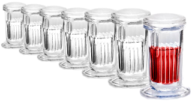

Preparaciones histológicas

• Material biológico
• Anestesia
• Fijación
• Deshidratación
• Desalcoholizado
• Inclusión
• Microtomía
• Tinción y montaje
Presentación:
• Elaboración de preparaciones histológicas de insectos.
Lecturas complementarias:
• Histología de insectos. Por Edson Hernández Espíndola (2020).